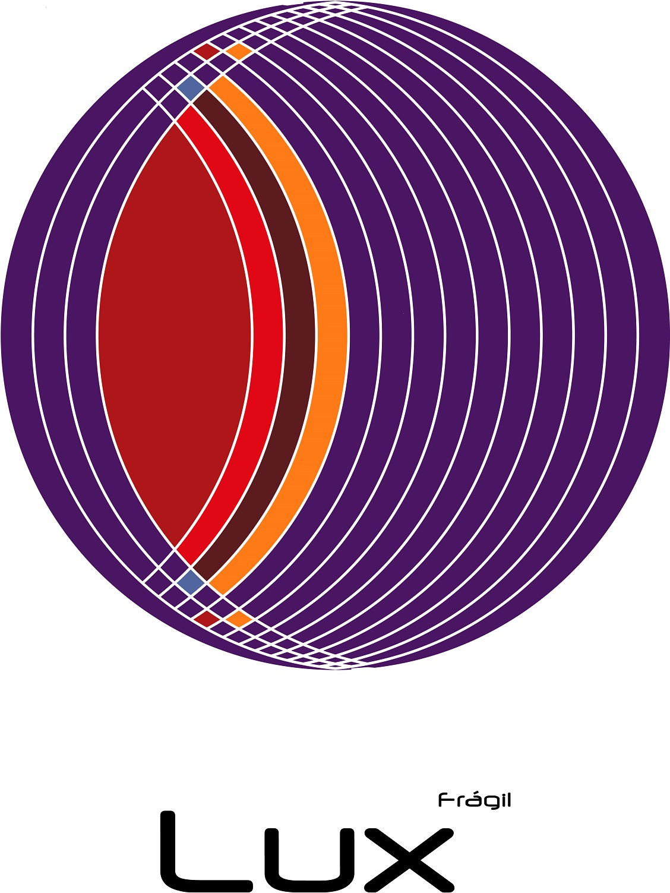
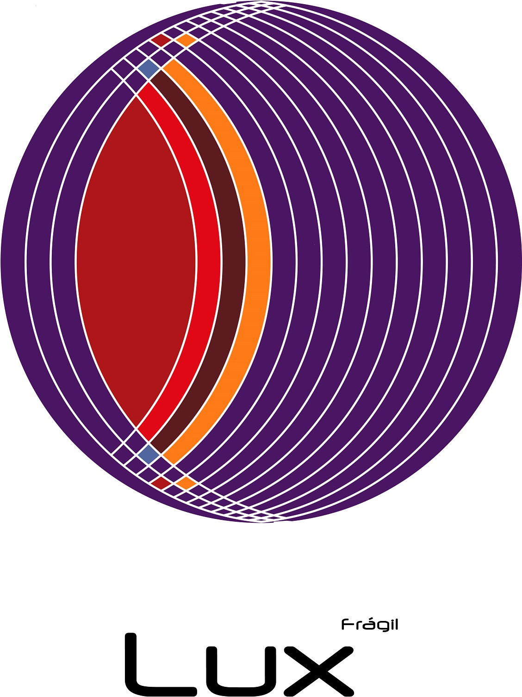
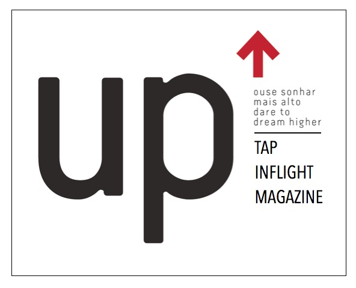
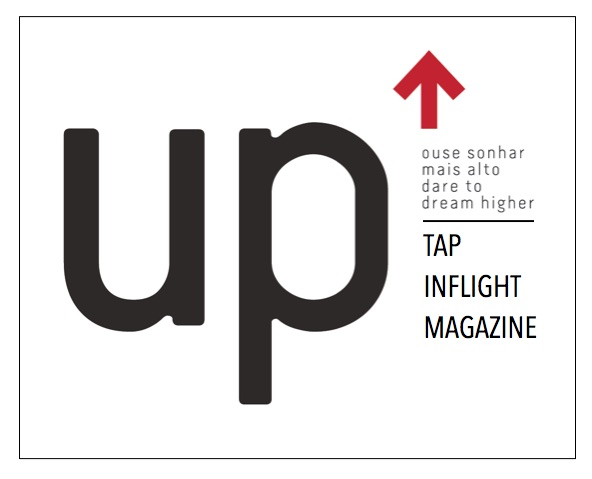

A “FM Consultores Associados” foi constituída em 25 de Maio de 1990. O seu fundador Fernando Mateus é licenciado em Organização e Gestão de Empresa, inscrito da ordem dos Contabilistas Certificados desde 4 de agosto de 1987 com o numero 23776. É membro de Órgãos Sociais de diversas empresas privadas tendo iniciado a sua atividade profissional chefiando os Serviços de Contabilidade da Associação Industrial Portuguesa
Serviços
Contabilidade Organizada
Apuramentos de impostos
Gestão de Clientes
Consultoria
Recursos Humanos
Associados
APDC – Associação Portuguesa par o Desenvolvimento das Comunicações
AICA - Associação Internac.de Criticos de Arte
BEBOT - Associação Para a Promoção da Arte Robótica e Tecnológica
XXS - ASSOCIAÇÃO PORTUGUESA DE APOIO AO BEBE PREMATURO
Associação Portuguesa de Facility Services
Hélice - Fotógrafos que usam a Fotografia – Associação
Obs - Oficina de Tavira Associação Cultural
Idanhaculta - Associação de Desenvolvimento Social
Aprender a Empreender – Associação .Jovens Empreendedores de Portugal
APHM - Assoc.Portuguesa de Habitação Municipal
APOEP - Assoc. Port. Orientadores Escolares e Profissionais


 
 


 
